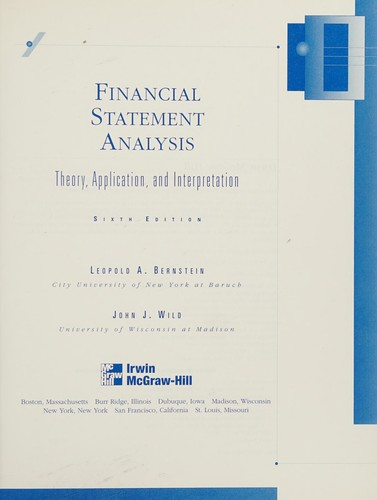

利奥波德·伯恩斯坦（Leopold A. Bernstein）的《Financial Statement Analysis: Theory, Application, and Interpretation》于1974年由R.D. Irwin首次出版，是英语世界中最早也最全面的财务报表分析学术教科书之一。伯恩斯坦是纽约城市大学巴鲁克学院（Bernard M. Baruch College, CUNY）的会计学教授，拥有博士学位和注册会计师资格，长期为金融机构和会计师事务所提供咨询服务。他因在财务分析领域的杰出贡献获得了金融分析师联合会颁发的格雷厄姆与多德奖（Graham and Dodd Award）。从第五版（1993年）起，威斯康星大学麦迪逊分校的约翰·J·怀尔德（John J. Wild）加入为合著者；第六版于1998年由Irwin/McGraw-Hill出版。伯恩斯坦去世后，怀尔德与K.R.苏布拉马尼亚姆（K.R. Subramanyam）继续更新后续版本。
本书的覆盖范围之广，在财务报表分析教科书中几乎无出其右。全书系统讲解了财务报表分析的完整方法论体系：从会计基础和报表结构出发，依次深入流动性分析、现金流预测、资本结构与偿债能力分析、投资资本回报率、资产利用效率、盈利质量评估、信用分析和权益估值。伯恩斯坦的分析框架强调将比率分析置于商业背景中理解——他反复提醒读者，孤立的财务比率没有意义，必须结合行业特征、经济周期和企业战略来解读。在盈利质量部分，伯恩斯坦详细讨论了收入确认政策、费用递延与资本化、非经常性项目、会计政策变更等影响盈利持续性和可靠性的因素，这些分析至今仍是法务会计和基本面分析的核心内容。
这部教科书在学术界和实务界的地位堪称财务报表分析领域的"圣经"。伯恩斯坦的Graham and Dodd Award获奖资历使本书同时获得了会计学界和金融分析师群体的双重认可。许多后来的财务分析著作——包括施利特（Howard Schilit）的《Financial Shenanigans》和桑顿·奥格洛夫（Thornton O'Glove）的《Quality of Earnings》——在方法论上都可以追溯到伯恩斯坦所建立的分析框架。本书第五版中文版《财务报表分析》由北京大学出版社于2001年出版，译者为许秉岩和张海燕，豆瓣评分7.9分。
对于认真研究基本面分析的投资者而言，伯恩斯坦与怀尔德的这部著作提供了一套最为完整的财务报表分析工具箱。它不像许多面向普通投资者的读物那样停留在几个简单比率的介绍上，而是深入到会计准则的细节中，帮助读者理解报表数字背后的经济实质。虽然本书的篇幅和学术性要求读者投入相当的时间和精力，但其回报是一种真正系统化的报表阅读能力——能够独立判断一家企业的盈利质量、偿债安全边际和内在价值，而不必依赖卖方分析师的二手解读。